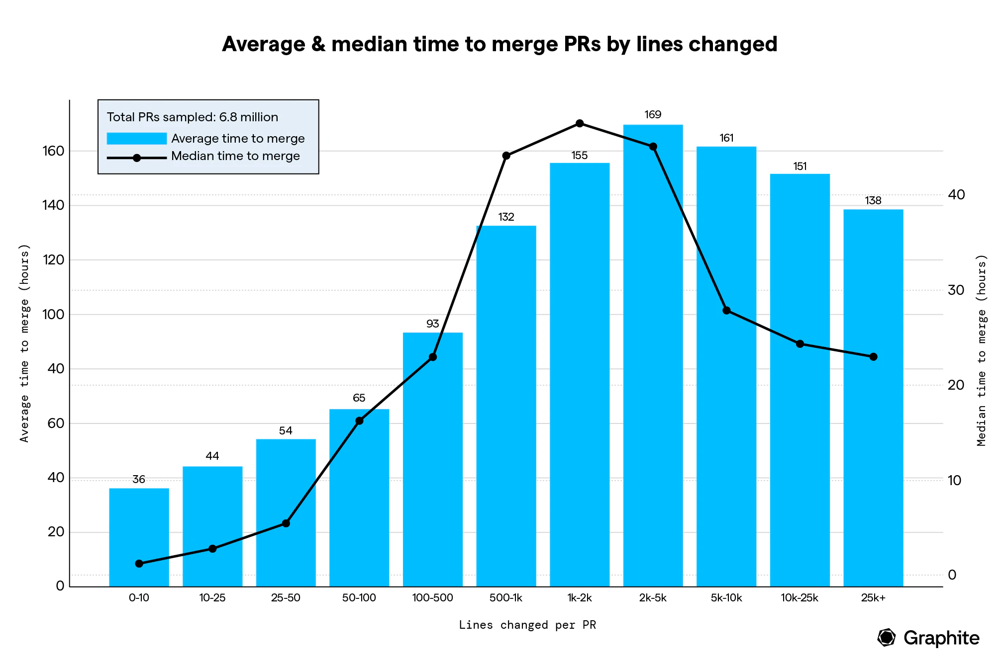

an unpopular opinion: get rid of pull requests!
brought to you by eugene romero
who is this "eugene romero"?
professional breaker of things @ capgemini
16+ years doing this IT stuff
guilty of having merged a PR without reading through it
this talk is clickbait.
but first, a bit of history.
PRs born in the open source world
companies used to review code changes in person, together
help manage submissions from all over the world
now, we've gone full circle with remote work
there is a fundamental problem with PRs.
raise your hand if...
i dislike stopping my work to review pull requests
i sometimes don't fully understand the code I am approving
seeing this makes my day better:

waiting on a PR to be approved has stopped me from deploying an urgent fix
i sometimes have to create PRs for tiny, repetitive changes
you are not alone.
the pull request paradox
i just wrote some code that can have a positive effect on our customers and I’m motivated to release it as quickly as possible
i need your help, but you are busy and motivated to continue working on your own code
let's discuss some issues with pull requests.
pull requests can easily get way too big...

leading to long review & merge times


huge PR review cycles slow down team velocity
average cycle time for developers was 6 days + 5 hours
average pull request review time was 4 days + 7 hours
33% of PRs were idle 77.8% of their lifespan
only 24% of 1000+ line PRs receive any review comments
pull requests can be hard to understand...

leading to LGTM syndrome aka "Stevie Wonder approvals"
quick reviews
quality issues
more bug fix PRs
more frustration
less time developing new features
the PR process can lead to responsibility shifting

how can we solve these issues?
get rid of PRs!
kidding.
but some things could be improved.
is a PR needed?
new functionality
potentially destructive changes
hard to reverse changes
when are PRs not needed?
very simple or repetitive changes
changes on which there are no other experts
non destructive, easily reversed changes
best case scenario: a PR is not needed.
consider alternative solutions
next case scenario: a PR is needed.
do not despair!
KEEP.
IT.
SMALL.
break into small, stacking parts
short-lived branches + feature toggles
50-200 changed lines
make your PR attractive.
provide valuable information
How many files changed?
How many lines?
What issue is this related to?
When am I available to discuss?
How urgent is this change?
source: https://linearb.io/blog/the-pull-request-paradox-merge-faster-by-promoting-your-pr
would you want to buy your own pull request?
this issue is divisive.
"this talk was clearly made by somebody focusing on the wrong part of the problem and without focus on different types of critical systems"
- anonymous reviewer
don't miss the point.
question everything.
sources:
https://linearb.io/blog/the-pull-request-paradox-merge-faster-by-promoting-your-pr
https://graphite.dev/blog/your-github-pr-workflow-is-slow
slides:
https://damn.engineer/slides